All Recipes
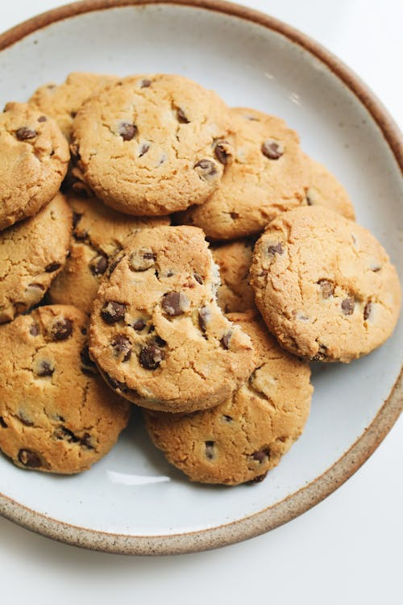
Chocolate Chip Cookies
Prep: 20min | Cook: 30min
Ingredients:
- 1 cup flour
- 1/2 cup sugar
- 1/4 cup chocolate chips
Steps:
Mix, bake, and enjoy!
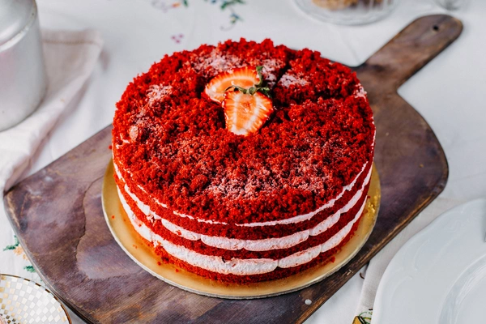
Red Velvet Cake
Prep: 30min | Cook: 1hr
Ingredients:
- 2 cups all-purpose flour
- 1 cup buttermilk
- 1/4 cup cocoa powder
Steps:
Whisk, bake, and frost!
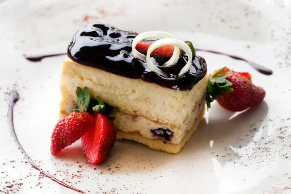
Easy No-Bake Pie
Prep: 15min | Chill: 2hr
Ingredients:
- 1 pre-made pie crust
- 1 can sweetened condensed milk
- 1/4 cup lemon juice
Steps:
Mix, pour, chill, and enjoy!
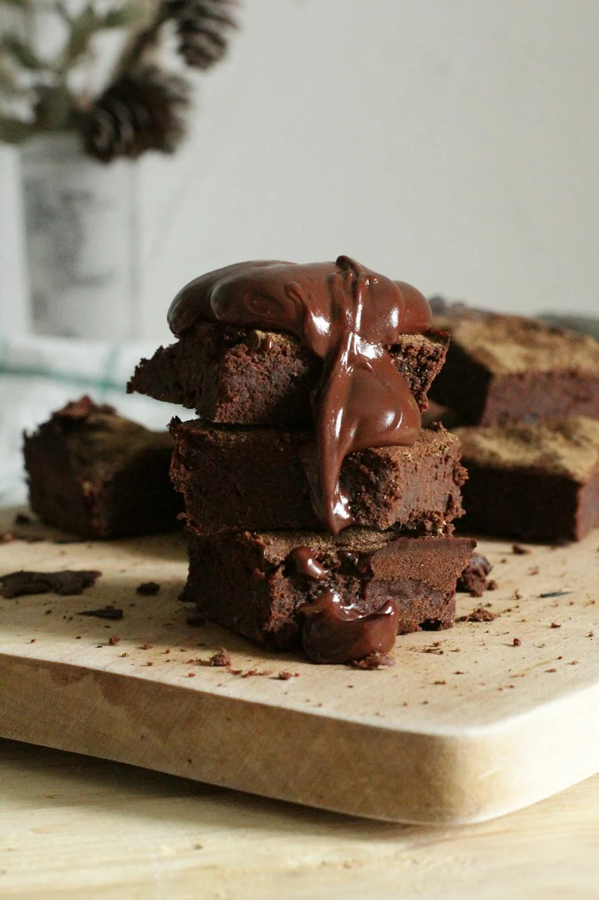
Classic Brownies
Prep: 10min | Cook: 25min
Ingredients:
- 1/2 cup cocoa powder
- 1 cup sugar
- 1/2 cup butter
Steps:
Mix, bake, and slice.
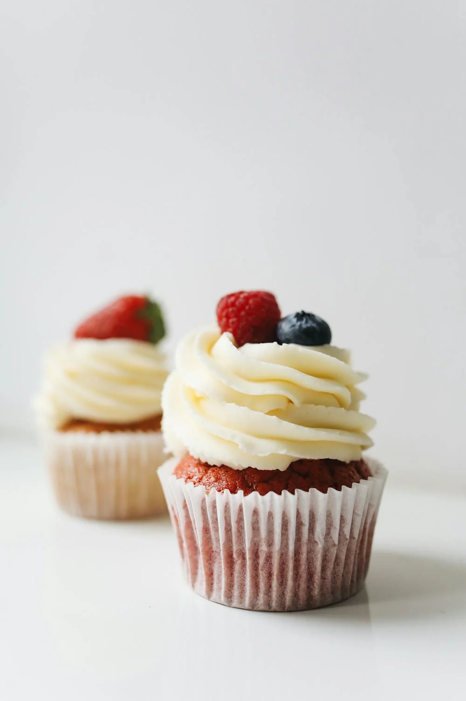
Vanilla Cupcakes
Prep: 15min | Cook: 20min
Ingredients:
- 1 1/2 cups flour
- 3/4 cup sugar
- 1/2 cup butter
Steps:
Mix, bake, and decorate.
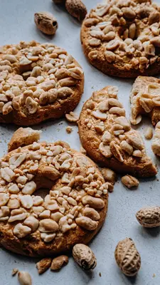
Buttery Shortbread
Prep: 10min | Cook: 20min
Ingredients:
- 1 cup flour
- 1/2 cup butter
- 1/4 cup sugar
Steps:
Mix, shape, and bake.
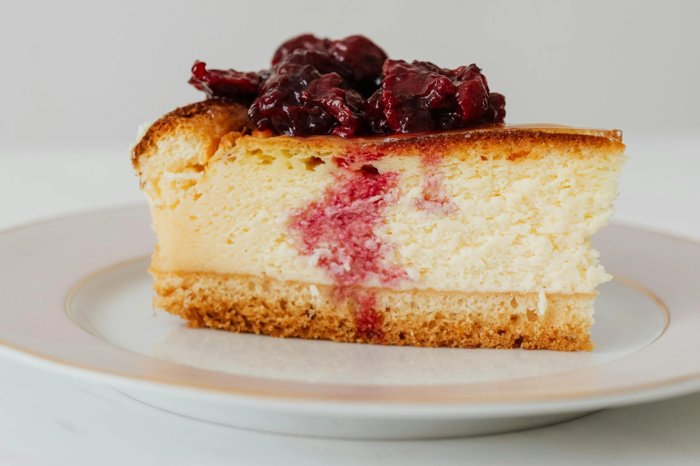
Baked Cheesecake
Prep: 20min | Cook: 1hr
Ingredients:
- 2 cups cream cheese
- 1 cup sugar
- 1 graham cracker crust
Steps:
Mix, bake, and chill.
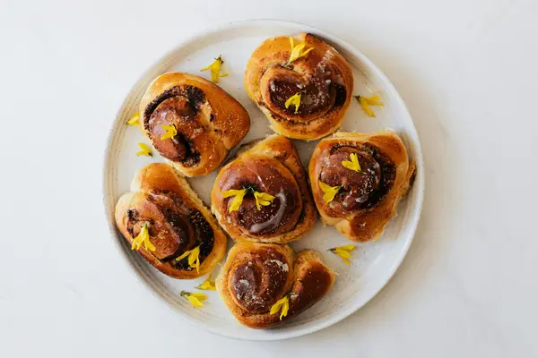
Cinnamon Rolls
Prep: 2hr | Cook: 25min
Ingredients:
- 3 cups flour
- 1/2 cup sugar
- 1 tbsp cinnamon
Steps:
Knead, roll, and bake.
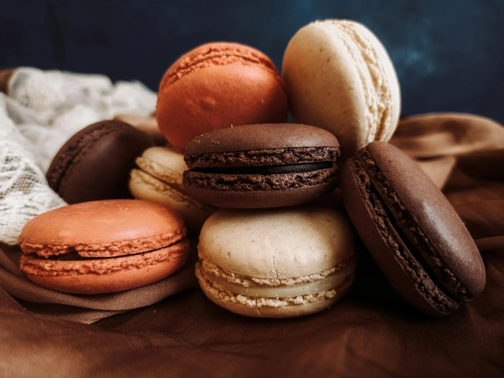
Coconut Macaroons
Prep: 10min | Cook: 15min
Ingredients:
- 2 cups shredded coconut
- 1/2 cup condensed milk
- 1 tsp vanilla extract
Steps:
Mix, shape, and bake.
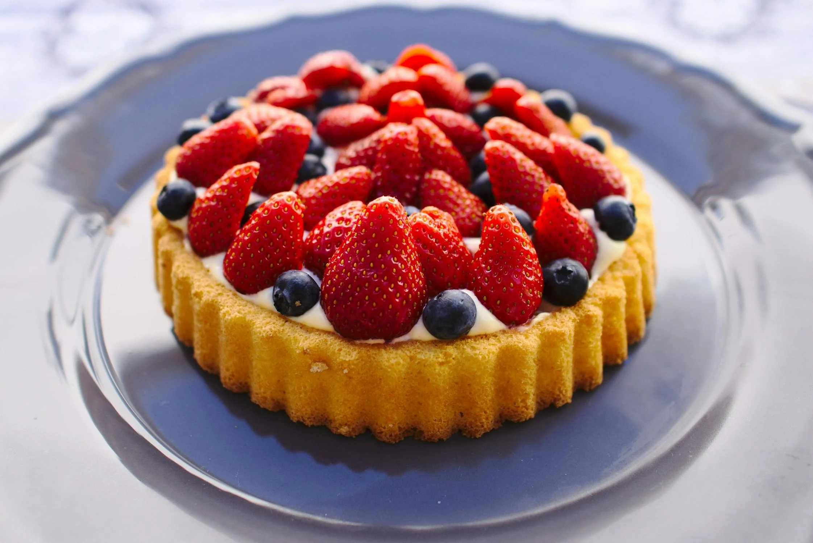
Fruit Tart
Prep: 30min | Chill: 1hr
Ingredients:
- 1 tart crust
- 2 cups custard
- 1 cup fresh fruit
Steps:
Assemble, chill, and serve.
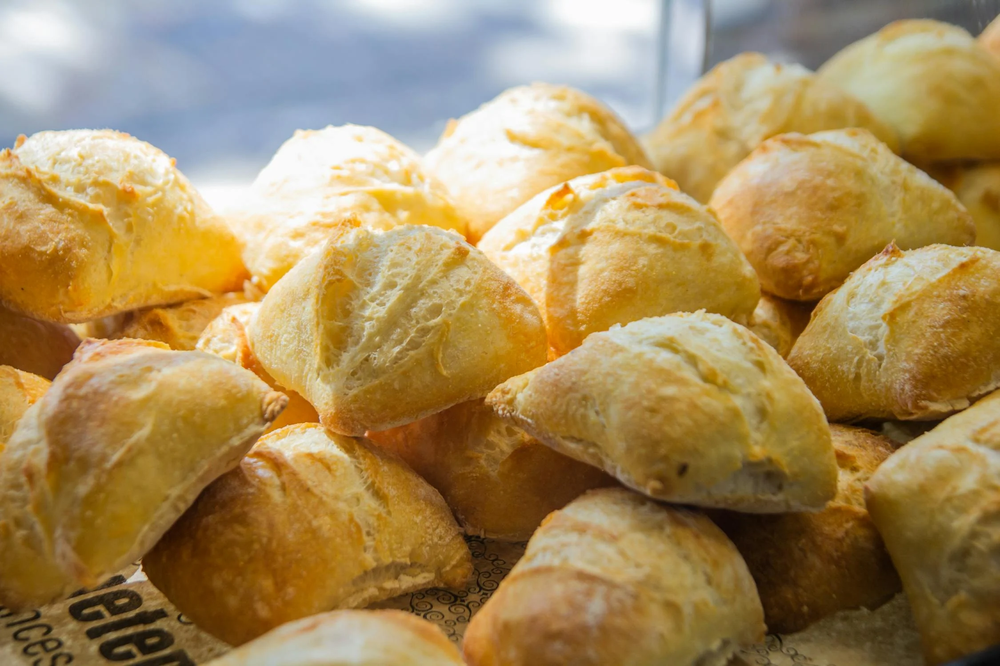
Classic Scones
Prep: 10min | Cook: 15min
Ingredients:
- 2 cups flour
- 1/3 cup sugar
- 1/2 cup cream
Steps:
Mix, bake, and serve warm.
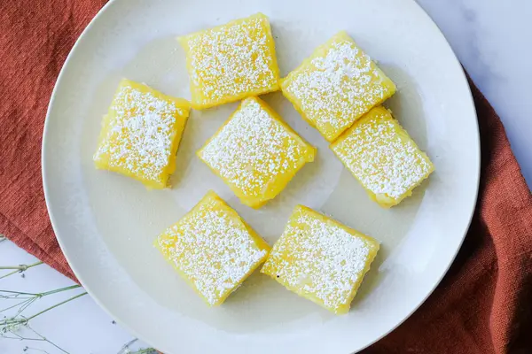
Lemon Bars
Prep: 15min | Cook: 25min
Ingredients:
- 1 cup flour
- 1/2 cup sugar
- 1/2 cup lemon juice
Steps:
Mix, bake, and cool.